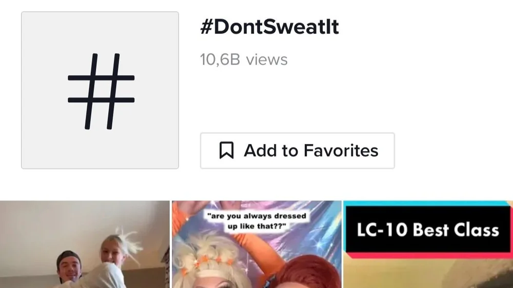

Music for media
Duck on Call – Theme song (Playmobil)
Ninjago – Inner Steel (theme song)
Adventures of Ayuma – Theme song

Hugo & Holger
LEGO – The Power of Creativity
HTH – Commercial
Momondo – The World Piece and Mo Ganji
Pierre Robert – Commercial
Alladin, Pralintaktik – Commercial
Männen från Vidsel
Bara tre minuter kvar
The Love Agency
“The Love Agency is a film that, with a distinctive and well-composed design language, dares to wait for the events and trust its images. It is an honest film that penetrates the screen and stays with the viewer for a long, long time.”The Tempo Festival
Othello — Theatre music & sound design
“On the whole, this year the director Thomas Segerström has brought together a series of leading actors who really act with and against each other! To this is Olle Markensten's music, which adds the 16th century to the present and makes the sounds soar towards the midsummer sky. ‘This years Roma’ is of an unusually good quality.”Dagens Nyheter
“Well-made music: Another two characteristics make this year's Shakespeare production in Romas monastery ruins a strong one. First, Olle Markenstens' emotionally charged music, partly as a commenting background and partly in the live scenes where the actors pick up both saxophone and accordion to become both musicians and act as a choir.”Gotland's Tidningar
Scener ur ett äktenskap — Theatre music
“Musical setting; Olle Markensten, who most recently composed original music for Othello in the monastery ruins, has this time combined his piano melodies to also fit into Strandgärdet's soundscape, lightly accompanied by the sea's birdlife and the occasional lapping of the waves… It sparkles from the stage of both seriousness and humor, damn cleverly packaged!”Dagens Nyheter
Trettondagsafton (Twelfth Night)
“The performance itself fortunately soon makes me forget about the money, because of the food of love: the music that permeates everything.”Svenska Dagbladet, review
“Romateatern's adaptation, as well as the newly written music by Olle Markensten, obviously hits home with the audience.”Svenska Dagbladet, 2011
“In the end, a full score is awarded to the jesters Tobias Aspelin and Stefan Marling, who appear a little everywhere with subtleties and very pleasant, well-performed music and song elements.”Gotland's Newspapers